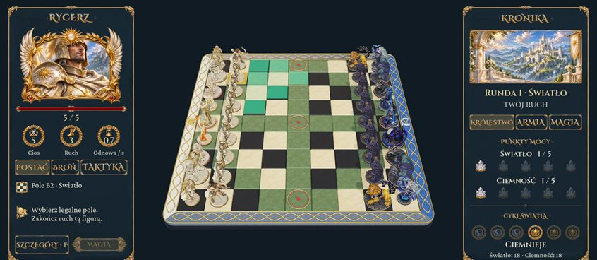
Ruch turowy
Wybierz pole
Zielone znaczniki pokazują, dokąd możesz ruszyć. Pole zajęte przez rywala może stać się miejscem pojedynku.


Strategia turowa Pojedynki w czasie rzeczywistym
Atakujesz figurę na planszy. W następnej chwili jesteś na arenie i walczysz o to samo pole w czasie rzeczywistym.
Miedziany Most Ilustracja promocyjna
Rozgrywka
Atak na wrogą figurę przenosi walkę na arenę. Przejmujesz tam sterowanie i walczysz o zajęte pole.

Ruch turowy
Zielone znaczniki pokazują, dokąd możesz ruszyć. Pole zajęte przez rywala może stać się miejscem pojedynku.
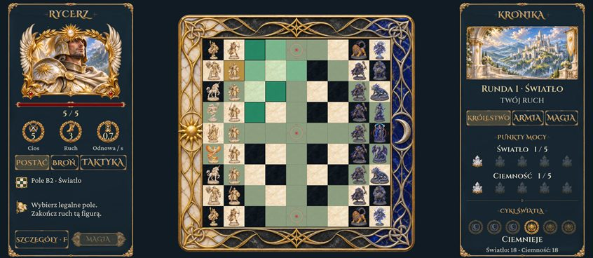
Ruch turowy
Widok 2D pokazuje tę samą turę. W grze możesz zmieniać perspektywę w trakcie partii.

Czas rzeczywisty
Wykorzystuj kryształy jako osłonę i reaguj na zamachy rywala. Wynik pojedynku rozstrzyga, która figura zostaje na polu.
Cykl światła
W trakcie partii 31 pól zmienia jasność. Na jasnym polu Światłość zaczyna pojedynek z większą premią do zdrowia. Ciemność zyskuje na polach ciemnych.
Świt · Zmienne pola stopniowo się rozjaśniają.
16 figur Światłości i Ciemności oraz cztery przyzywane żywiołaki.

Światłość · Lot
Przelatuje nad figurami na planszy. Na arenie miota złotą włócznią i może trzymać wroga na dystans.
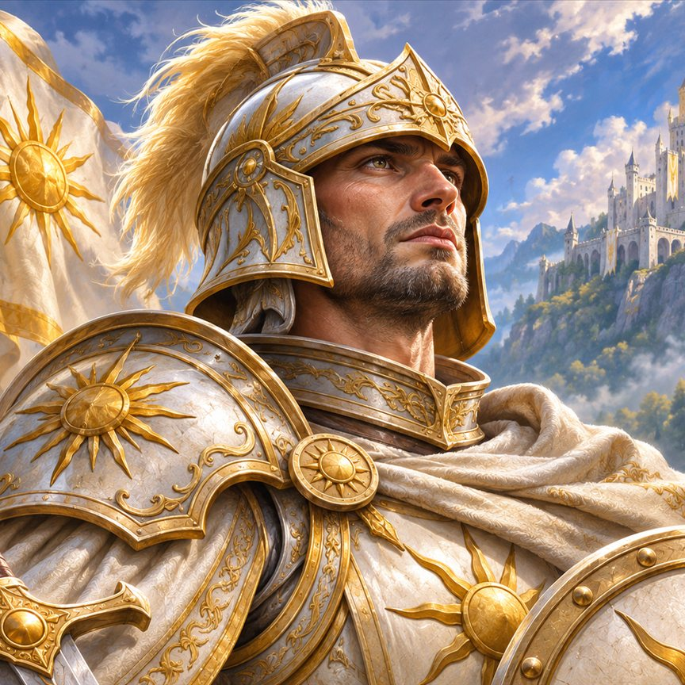
Światłość · Ruch naziemny
W pojedynku szybko wyprowadza kolejne cięcia. Na podejściu do zwarcia korzysta z osłony kryształów.
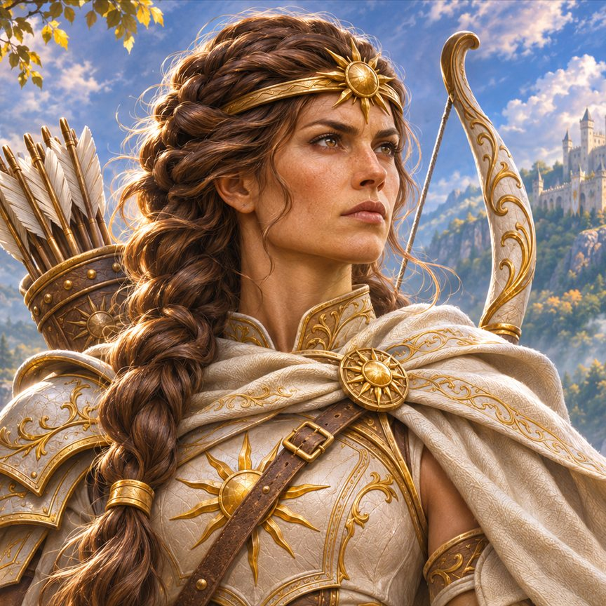
Światłość · Ruch naziemny
Strzela srebrnymi strzałami. Ma mało zdrowia, więc w pojedynku liczy na osłony i dystans.
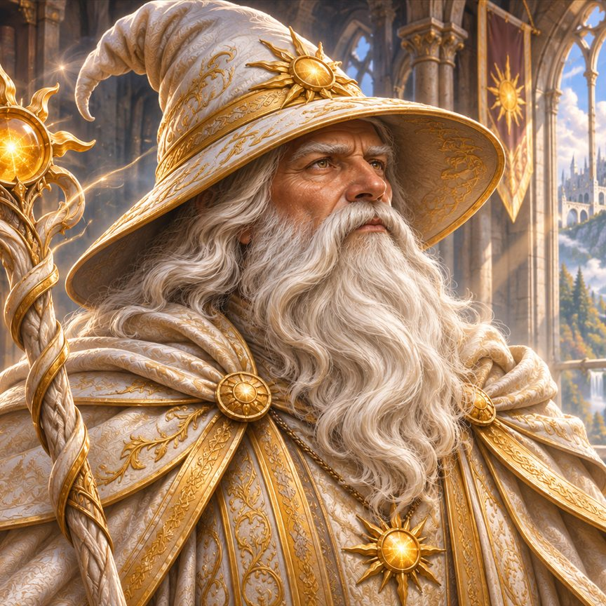
Światłość · Teleportacja
Teleportuje się po planszy i włada czarami Światłości. Zużyte zaklęcia zmniejszają jego zdrowie na arenie.

Światłość · Ruch naziemny
Znosi wiele trafień. Rzuca ciężkim kamiennym odłamkiem i potrzebuje chwili przed kolejnym atakiem.
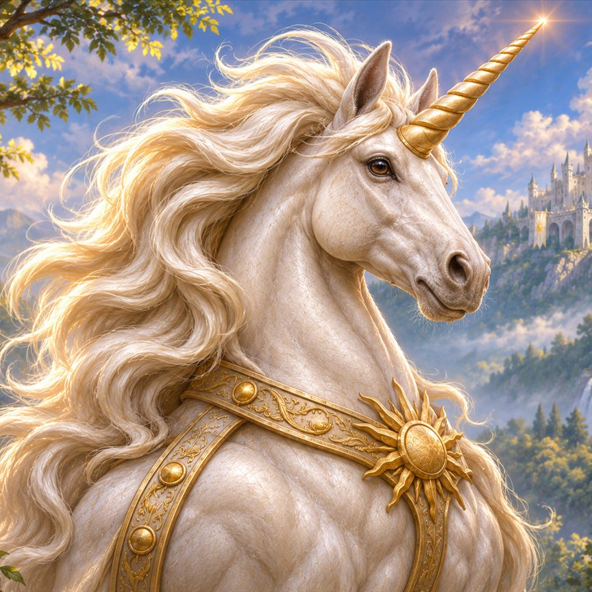
Światłość · Ruch naziemny
Na planszy porusza się do czterech pól. Na arenie posyła szybki pryzmat wzdłuż wolnego przejścia.
Światłość · Lot
Przelatuje do czterech pól. W pojedynku miota spiralą wiatru i ma duży zapas zdrowia.
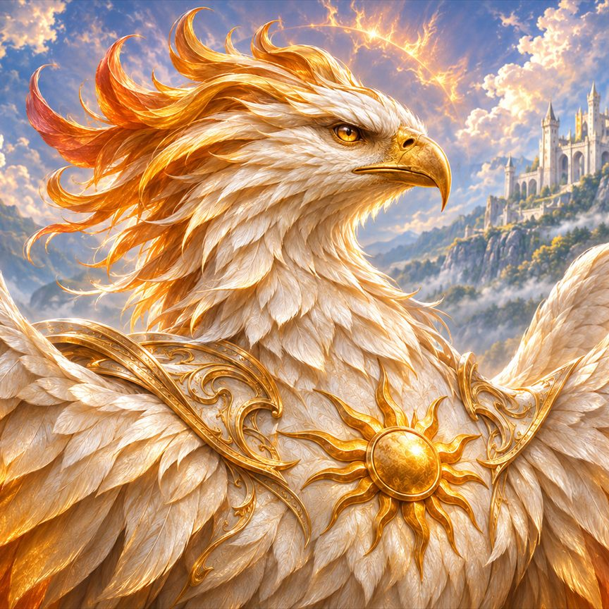
Światłość · Lot
Zatrzymuje się, by wzniecić ognisty wybuch wokół siebie. W tej krótkiej chwili jest odporny na trafienia.
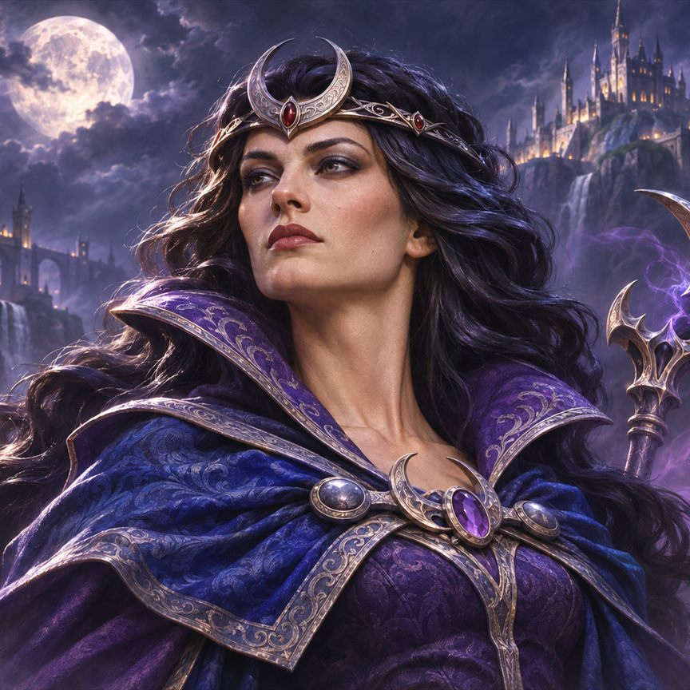
Ciemność · Teleportacja
Otwiera księgę czarów swojej strony. Może uzdrowić figurę albo przenieść ją w inne miejsce na planszy.

Ciemność · Lot
Przelatuje nad figurami, a na arenie atakuje smoczym żarem. Otwarta przestrzeń pozwala mu wykorzystać zasięg.

Ciemność · Ruch naziemny
Na arenie szuka okazji do szybkiego podejścia. Gdy jest blisko, zadaje serię ciosów poszarpanym ostrzem.

Ciemność · Ruch naziemny
Miota żądłem na odległość. Między atakami może zmienić pozycję i zasłonić się kryształem.
Ciemność · Lot
Widmowy krzyk rani wrogów wokół niej. Banshee stoi w miejscu, dopóki atak trwa.

Ciemność · Ruch naziemny
Wytrzymuje wiele trafień i miota ciężkim odłamkiem granitu. Najgroźniejszy, gdy ma wolną linię strzału.

Ciemność · Ruch naziemny
Strzela szybkim, jadowitym kolcem. Na otwartej arenie trudno go ominąć, a pełne kryształy zatrzymują pocisk.

Ciemność · Lot
Przejmuje broń i bazową wytrzymałość przeciwnika. Po wygranej odzyskuje pełne zdrowie.

Przyzwanie · Prąd powietrza
Posyła prąd powietrza i szybko wraca do ataku. Znika po zakończeniu pojedynku, do którego go przyzwano.
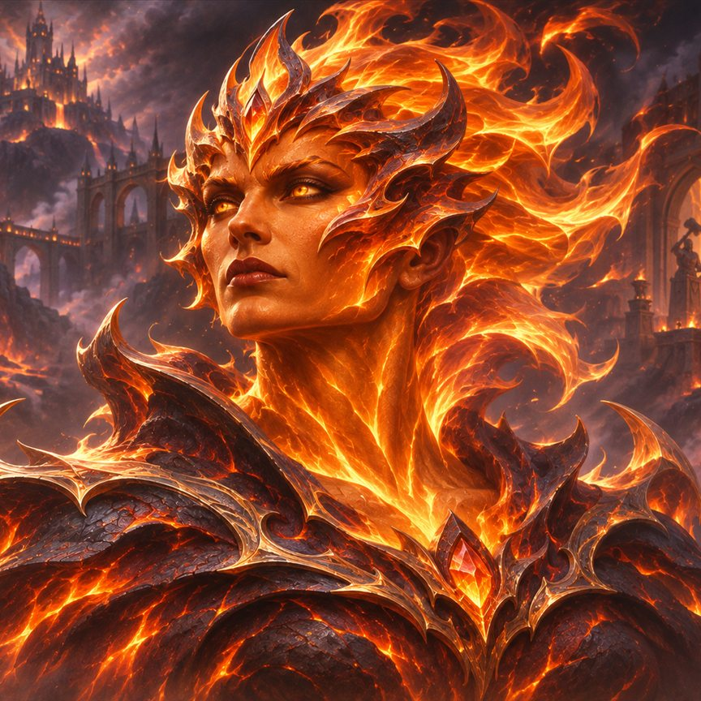
Przyzwanie · Żywy płomień
Miota szybkim płomieniem, który zadaje silne obrażenia. Ma najkrótszą przerwę między atakami wśród żywiołaków.
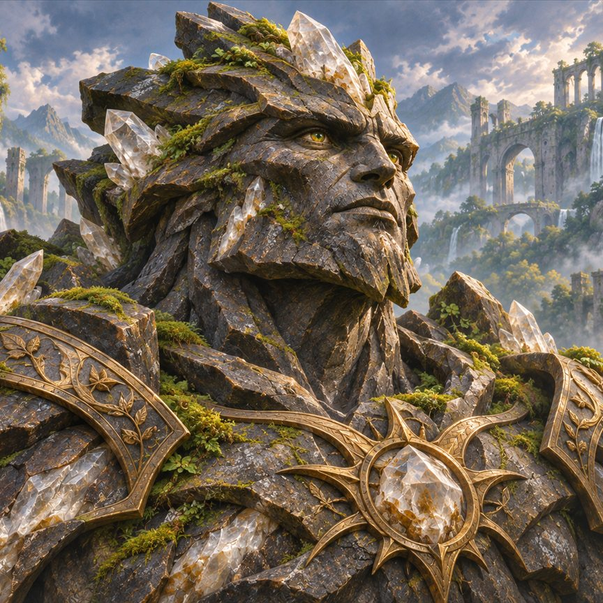
Przyzwanie · Ciężar ziemi
Najwytrzymalszy z przyzwanych żywiołaków. Rzuca ciężkim pociskiem i długo czeka na kolejny strzał.

Przyzwanie · Wodna fala
Atakuje wodną falą na odległość. Duży zapas zdrowia pozwala mu przetrwać wymianę trafień.
Trzy scenariusze przeciw komputerowi z gotową pozycją i limitem ruchów.
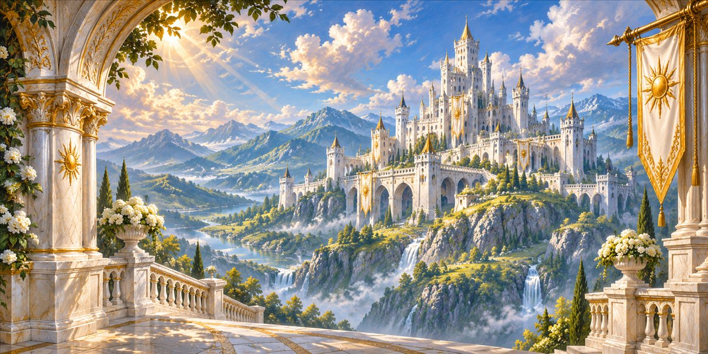
Odbij E5 w trzech swoich ruchach i utrzymaj je przez cztery kolejne tury obu stron. Światłość może raz odwrócić czas.

Zajmij jednocześnie E1 i E9 w sześciu ruchach Ciemności.

Doprowadź ranną Czarodziejkę na I5 w pięciu ruchach. Ciemność może raz użyć Uzdrowienia.
Otwórz bramę w pełnoekranowym instalatorze. Jeden plik zawiera całą grę i dodaje ją do menu Start.
Pobierz instalator WindowsWindows 10 22H2 lub Windows 11 (x64) · EXE · 912 MiB
Wersja 0.1.0-preview.2 · 2,16 GiB po instalacji
Suma kontrolna SHA-256